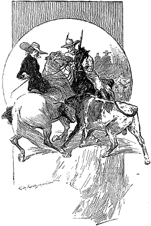
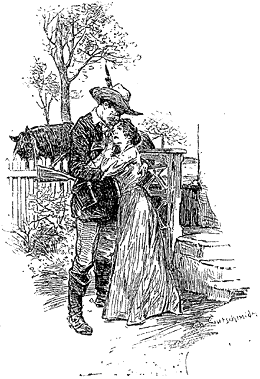

This is not the place to commemorate the trials and privations endured by the immigrant Mormons before they came to their final haven. From the shores of the Mississippi to the western slopes of the Rocky Mountains they had struggled on with a constancy almost unparalleled in history. The savage man, and the savage beast, hunger, thirst, fatigue, and disease—every impediment which Nature could place in the way—had all been overcome with Anglo-Saxon tenacity. Yet the long journey and the accumulated terrors had shaken the hearts of the stoutest among them. There was not one who did not sink upon his knees in heartfelt prayer when they saw the broad valley of Utah bathed in the sunlight beneath them, and learned from the lips of their leader that this was the promised land, and that these virgin acres were to be theirs for evermore.
Young speedily proved himself to be a skilful administrator as well as a resolute chief. Maps were drawn and charts prepared, in which the future city was sketched out. All around farms were apportioned and allotted in proportion to the standing of each individual. The tradesman was put to his trade and the artisan to his calling. In the town streets and squares sprang up as if by magic. In the country there was draining and hedging, planting and clearing, until the next summer saw the whole country golden with the wheat crop. Everything prospered in the strange settlement. Above all, the great temple which they had erected in the centre of the city grew ever taller and larger. From the first blush of dawn until the closing of the twilight, the clatter of the hammer and the rasp of the saw were never absent from the monument which the immigrants erected to Him who had led them safe through many dangers.
The two castaways, John Ferrier and the little girl, who had shared his fortunes and had been adopted as his daughter, accompanied the Mormons to the end of their great pilgrimage. Little Lucy Ferrier was borne along pleasantly enough in Elder Stangerson's waggon, a retreat which she shared with the Mormon's three wives and with his son, a headstrong, forward boy of twelve. Having rallied, with the elasticity of childhood, from the shock caused by her mother's death, she soon became a pet with the women, and reconciled herself to this new life in her moving canvas-covered home. In the meantime Ferrier having recovered from his privations, distinguished himself as a useful guide and an indefatigable hunter. So rapidly did he gain the esteem of his new companions, that when they reached the end of their wanderings, it was unanimously agreed that he should be provided with as large and as fertile a tract of land as any of the settlers, with the exception of Young himself, and of Stangerson, Kemball, Johnston, and Drebber, who were the four principal Elders.
On the farm thus acquired John Ferrier built himself a substantial log-house, which received so many additions in succeeding years that it grew into a roomy villa. He was a man of a practical turn of mind, keen in his dealing and skilful with his hands. His iron constitution enabled him to work morning and evening at improving and tilling his lands. Hence it came about that his farm and all that belonged to him prospered exceedingly. In three years he was better off than his neighbours, in six he was well-to-do, in nine he was rich, and in twelve there were no half a dozen men in the whole of Salt Lake City who could compare with him. From the great inland sea to the distant Wahsatch Mountains there was no name better known than that of John Ferrier.
There was one way and only one in which he offended the susceptibilities of his co-religionists. No argument or persuasion could ever induce him to set up a female establishment after the manner of his companions. He never gave reasons for this persistent refusal, but contented himself by resolutely and inflexibly adhering to his determination. There were some who accused him of luke-warmness in his adopted religion, and others who put it down to greed of wealth and reluctance to incur expense. Others, again, spoke of some early love affair, and of a fair-haired girl who had pined away on the shores of the Atlantic. Whatever the reason, Ferrier remained strictly celibate. In every other respect he conformed to the religion of the young settlement, and gained the name of being an orthodox and straight-walking man.
Lucy Ferrier grew up within the log-house, and assisted her adopted father in all his undertakings. The keen air of the mountains and the balsamic odour of the pine trees took the place of nurse and mother to the young girl. As year succeeded to year she grew taller and stronger, her cheek more ruddy and her step more elastic. Many a wayfarer upon the high road which ran by Ferrier's farm felt long-forgotten thoughts revive in their minds as they watched her lithe, girlish figure tripping through the wheat-fields, or met her mounted upon her father's mustang, and managing it with all the east and grace of a true child of the West. So the bud blossomed into a flower, and the year which saw her father the richest of the farmers left her as fair a specimen of American girlhood as could be found in the whole Pacific slope.
It was not the father, however, who first discovered that the child had developed into a woman. It seldom is in such cases. That mysterious change is too subtle and too gradual to be measured by dates. Least of all does the maiden herself know it until the tone of a voice of the touch of a hand sets her heart thrilling within her, and she learns with a mixture of pride and of fear, that a new and a larger nature has awoke within her. There are few who cannot recall that day and remember the one little incident which heralded the dawn of a new life. In the case of Lucy Ferrier the occasion was serious enough in itself, apart from its future influence on her destiny and that of many besides.
It was a warm June morning, her, and the Latter Day Saints were as busy as the bees whose hives they have chosen for their emblem. In the fields and in the streets rose the same hum of human industry. Down the dusty high roads defiled long streams of heavily-laden mules, all heading to the west, for the gold fever had broken out in California, and the overland route lay through the city of the Elect. There, too, were droves of sheep and bullocks coming in from the outlying pasture lands, and trains of tired immigrants, men and horses equally weary of their interminable journey. Through all this motley assemblage, threading her way with the skill of an accomplished rider, there galloped Lucy Ferrier, her fair face flushed with the exercise and her long chestnut hair floating out behind her. She had a commission from her father in the city, and was dashing in as she had done many a time before, with all the fearlessness of youth, thinking only of her task and how it was to be performed. The travel-stained adventurers gazed after her in astonishment, and even the unemotional Indians, journeying in with their pelties, relaxed their accustomed stoicism as they marvelled at the beauty of the pale-faced maiden.
She had reached the outskirts of the city when she found the road blocked by a great drove of cattle, driven by a half-dozen wild-looking herdsmen from the plains. In her impatience she endeavoured to pass this obstacle by pushing her horse into what appeared to be a gap. Scarcely had she got fairly into it, however, before the beasts closed in behind her, and she found herself completely imbedded in the moving stream of fierce-eyed, long-horned bullocks. Accustomed as she was to deal with cattle, she was not alarmed at her situation, but took advantage of every opportunity to urge her horse on, in the hopes of pushing her way through the cavalcade. Unfortunately the horns of one of the creatures, either by accident or design, came in violent contact with the flank of the mustang, and excited it to madness. In an instant it reared upon its hind legs with a snort of rage, and pranced and tossed in a way that would have unseated any but a skilful rider. The situation was full of peril. Every plunge of the excited horse brought it against the horns again, and goaded it to fresh madness. It was all that the girl could do to keep herself in the saddle, yet a slip would mean a terrible death under the hoofs of the unwieldy and terrified animals. Unaccustomed to sudden emergencies, her head began to swim, and her grip upon the bridle to relax. Choked by the rising cloud of dust and by the steam of the struggling creatures, she might have abandoned her efforts in despair, but for a kindly voice at her elbow which assured her of assistance. At the same moment a sinewy brown hand caught the frightened horse by the curb, and forcing a way through the drove, soon brought her to the outskirts.
"You're not hurt, I hope, miss," said her preserver, respectfully.
She looked up at his dark, fierce face, and laughed saucily. "I'm awful frightened," she said, naïvely; "whoever would have thought that Poncho would have been so scared by a lot of cows?"
"Thank God you kept your seat," the other said earnestly. He was a tall, savage-looking young fellow, mounted on a powerful roan horse, and clad in the rough dress of a hunter, with a long rifle slung over his shoulders. "I guess you are the daughter of John Ferrier," he remarked; "I saw you ride down from his house. When you see him, ask him if he remembers the Jefferson Hopes of St. Louis. If he's the same Ferrier, my father and he were pretty thick."
"Hadn't you better come and ask yourself?" she asked, demurely.
The young fellow seemed pleased at the suggestion, and his dark eyes sparkled with pleasure. "I'll do so," he said; "we've been in the mountains for two months, and are not over and above in visiting condition. He must take us as he finds us."
"He has a good deal to thank you for, and so have I," she answered, "he's awful fond of me. If those cows had jumped on me he'd have never got over it."
"Neither would I," said her companion.
"You! Well, I don't see that it would make much matter to you, anyhow. You ain't even a friend of ours."
The young hunter's dark face grew so gloomy over this remark that Lucy Ferrier laughed aloud.
"There, I didn't mean that," she said; "of course, you are a friend now. You must come and see us. Now I must push along, or father won't trust me with his business any more. Good-bye!"
"Good-bye," he answered, raising his broad sombrero, and bending over her little hand. She wheeled her mustang round, gave it a cut with her riding-whip, and darted away down the broad road in a rolling cloud of dust.
Young Jefferson Hope rode on with his companions, gloomy and taciturn. He and they had been among the Nevada Mountains prospecting for silver, and were returning to Salt Lake City in the hope of raising capital enough to work some lodes which they had discovered. He had been as keen as any of them upon the business until this sudden incident had drawn his thoughts into another channel. The sight of the fair young girl, as frank and wholesome as the Sierra breezes, had stirred his volcanic, untamed heart to its very depths. When she had vanished from his sight, he realized that a crisis had come in his life, and that neither silver speculations nor any other questions could ever be of such importance to him as this new and all-absorbing one. The love which had sprung up in his heart was not the sudden, changeable fancy of a boy, but rather the wild, fierce passion of a man of strong will and imperious temper. He had been accustomed to succeed in all that he undertook. He swore in his heart that he would not fail in this if human effort and human perseverance could render him successful.
He called on John Ferrier that night, and many times again, until his face was a familiar one at the farmhouse. John, cooped up in the valley, and absorbed in his work, had had little chance of learning the news of the outside world during the last twelve years. All this Jefferson Hope was able to tell him, and in a style which interested Lucy as well as her father. He had been a pioneer in California, and could narrate many a strange tale of fortunes made and fortunes lost in those wild, halcyon days. He had been a scout too, and a trapper, a silver explorer, and a ranchman. Wherever stirring adventures were to be had, Jefferson Hope had been there in search of them. He soon became a favourite with the old farmer, who spoke eloquently of his virtues. On such occasions, Lucy was silent, but her blushing cheek and her bright, happy eyes showed only too clearly that her young heart was no longer her own. Her honest father may not have observed these symptoms, but they were assuredly not thrown away upon the man who had won her affections.
One summer evening he came galloping down the road and pulled up at the gate. She was at the doorway, and came down to meet him. He threw the bridle over the fence and strode up the pathway.
"I am off, Lucy," he said, taking her two hands in his, and gazing tenderly down into her face; "I won't ask you to come with me now, but will you be ready to come when I am here again?"
"And when will that be?" she asked, blushing and laughing.
"A couple of months at the outside. I will come and claim you then, my darling. There's no one who can stand between us."
"And how about father?" she asked.
"He has given his consent, provided we get these mines working all right. I have no fear on that head."
"Oh, well; of course, if you and father have arranged it all, there's no more to be said," she whispered, with her cheek against his broad breast.
"Thank God!" he said, hoarsely, stooping and kissing her. "It is settled then. The longer I stay, the harder it will be to go. They are waiting for me at the cañon. Good-bye, my own darling—good-bye. In two months you shall see me."
He tore himself from her as he spoke, and, flinging himself upon his horse, galloped furiously away, never even looking round, as though afraid that his resolution might fail him if he took one glance at what he was leaving. She stood at the gate, gazing after him until he vanished from her sight. Then she walked back into the house the happiest girl in all Utah.